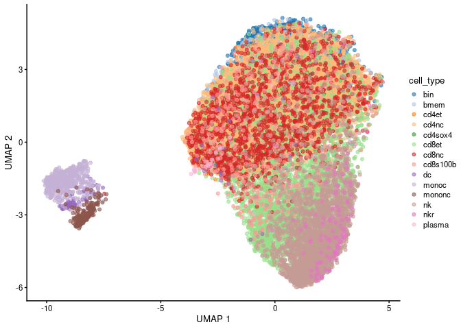
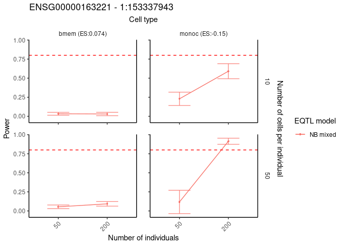

scDesignPop is a simulator for population-scale single-cell RNA-sequencing (scRNA-seq) data.
Installation
You can install the development version of scDesignPop from GitHub with:
# install.packages("remotes")
remotes::install_github("chrisycd/scDesignPop")Step 1: construct a data list
To run scDesignPop, a list of data is required as input. This is done using the constructDataPop function. A SingleCellExperiment object and an eqtlgeno dataframe are the two main inputs needed. The eqtlgeno dataframe consists of eQTL annotations (it must have cell state, gene, SNP, chromosome, and position columns at a minimum), and genotypes across individuals (columns) for every SNP (rows). The structure of an example eqtlgeno dataframe is given below.
library(scDesignPop)
library(SingleCellExperiment)
library(SummarizedExperiment)
library(scater)
data("example_eqtlgeno")
data("example_sce")
head(example_eqtlgeno)
#> cell_type gene_id snp_id CHR POS indiv1 indiv2 indiv3
#> 1 cd4nc ENSG00000023902 1:150133323 1 150133323 0 1 0
#> 2 cd8nc ENSG00000023902 1:150159616 1 150159616 2 2 2
#> 3 cd4nc ENSG00000028137 1:12192270 1 12192270 2 0 2
#> 4 cd8nc ENSG00000028137 1:12267999 1 12267999 1 0 1
#> 5 nk ENSG00000028137 1:12267999 1 12267999 2 0 2
#> 6 cd4et ENSG00000049247 1:8175947 1 8175947 1 1 1
#> indiv4 indiv5 indiv6 indiv7 indiv8 indiv9 indiv10 indiv11 indiv12 indiv13
#> 1 1 1 0 0 1 0 0 1 0 1
#> 2 1 2 1 1 2 2 2 1 2 2
#> 3 2 2 1 2 2 2 2 2 2 2
#> 4 1 1 1 0 0 1 1 1 1 1
#> 5 1 1 1 1 0 1 1 0 2 0
#> 6 0 1 0 1 1 2 1 1 0 2
#> indiv14 indiv15 indiv16 indiv17 indiv18 indiv19 indiv20
#> 1 0 0 1 0 0 0 1
#> 2 1 1 2 2 1 2 2
#> 3 1 2 1 2 2 1 1
#> 4 0 1 1 2 0 1 2
#> 5 1 0 0 2 0 1 0
#> 6 1 1 0 1 2 0 2
data_list <- constructDataPop(
sce = example_sce,
eqtlgeno_df = example_eqtlgeno,
new_covariate = as.data.frame(colData(example_sce)),
overlap_features = NULL,
sampid_vec = NULL,
ct_copula = TRUE,
slot_name = "counts",
snp_model = "single",
cellstate_colname = "cell_type",
feature_colname = "gene_id",
snp_colname = "snp_id",
loc_colname = "POS",
chrom_colname = "CHR",
indiv_colname = "indiv",
prune_thres = 0.9
)Step 2: fit marginal model
Next, a marginal model is specified to fit each gene using the fitMarginalPop function.
Here we use a Negative Binominal as the parametric model using "nb".
marginal_list <- fitMarginalPop(
data_list = data_list,
mean_formula = "(1|indiv) + cell_type",
model_family = "nb",
interact_colnames = "cell_type",
parallelization = "pbmcapply",
n_threads = 50L,
loc_colname = "POS",
snp_colname = "snp_id",
cellstate_colname = "cell_type",
indiv_colname = "indiv",
filter_snps = TRUE,
snpvar_thres = 0,
force_formula = FALSE,
data_maxsize = 1
)Step 3: fit a Gaussian copula
The third step is to fit a Gaussian copula using the fitCopulaPop function.
set.seed(123, kind = "L'Ecuyer-CMRG")
copula_fit <- fitCopulaPop(
sce = example_sce,
assay_use = "counts",
input_data = data_list[["new_covariate"]],
marginal_list = marginal_list,
family_use = "nb",
copula = "gaussian",
n_cores = 6L,
parallelization = "mcmapply"
)
RNGkind("Mersenne-Twister") # resetStep 4: extract parameters
The fourth step is to compute the mean, sigma, and zero probability parameters using the extractParaPop function.
para_new <- extractParaPop(
sce = example_sce,
assay_use = "counts",
marginal_list = marginal_list,
n_cores = 6L,
family_use = "nb",
new_covariate = data_list[["new_covariate"]],
new_eqtl_geno_list = data_list[["eqtl_geno_list"]],
data = data_list[["covariate"]],
parallelization = "pbmcmapply"
)Step 5: simulate counts
The fifth step is to simulate counts using the simuNewPop function.
set.seed(123)
newcount_mat <- simuNewPop(
sce = example_sce,
mean_mat = para_new[["mean_mat"]],
sigma_mat = para_new[["sigma_mat"]],
zero_mat = para_new[["zero_mat"]],
quantile_mat = NULL,
copula_list = copula_fit[["copula_list"]],
n_cores = 6L,
family_use = "nb",
nonnegative = TRUE,
input_data = data_list[["covariate"]],
new_covariate = data_list[["new_covariate"]],
important_feature = copula_fit[["important_feature"]],
filtered_gene = data_list[["filtered_gene"]],
parallelization = "pbmcmapply"
)Step 6: create SingleCellExperiment object using simulated data
After simulating the data, we can create a SingleCellExperiment object as follows.
Step 7: visualize using UMAP
The simulated data can be visualized using a UMAP plot as follows.
logcounts(simu_sce) <- log1p(counts(simu_sce))
simu_sce <- runPCA(simu_sce,
ncomponents = 30) # default is 50
set.seed(123)
simu_sce <- runUMAP(
simu_sce,
dimred = "PCA",
n_neighbors = 15, # default
min_dist = 0.3, # default
n_threads = 10L
)
plotReducedDim(simu_sce, "UMAP", color_by = "cell_type")
Step 8: running power analysis
Lastly, scDesignPop can perform simulation-based power analysis for a specific gene-SNP pair across cell types using the runPowerAnalysis function. Here, we choose the negative binomial mixed model using "nb" option.
set.seed(123)
power_data <- runPowerAnalysis(marginal_list = marginal_list,
marginal_model = "nb",
geneid = "ENSG00000163221",
snpid = "1:153337943",
type_specific = "cell_type",
type_vector = c("bmem", "monoc"),
methods = c("nb"),
nindivs = c(50, 200),
ncells = c(10, 50),
alpha = 0.05,
power_nsim = 100,
snp_number = 10,
gene_number = 800,
CI_nsim = 1000,
CI_conf = 0.05,
ncores = 50L)
#> [1] -4.760502
#> [1] 0.07402542
#> [1] 1.848063
#> [1] -0.1496348
head(power_data)
#> power nindiv ncell mean sd ci1 ci2 intercept slope
#> 2.5% 0.06 50 10 0.03258 0.01892358 0.00 0.08 -4.760502 0.07402542
#> 2.5%1 0.11 50 50 0.05419 0.02388125 0.01 0.11 -4.760502 0.07402542
#> 2.5%2 0.08 200 10 0.02983 0.02186205 0.00 0.08 -4.760502 0.07402542
#> 2.5%3 0.15 200 50 0.09287 0.03008934 0.04 0.16 -4.760502 0.07402542
#> 2.5%4 0.46 50 10 0.22914 0.08725293 0.11 0.45 1.848063 -0.14963478
#> 2.5%11 0.49 50 50 0.11778 0.15279993 0.00 0.42 1.848063 -0.14963478
#> celltype method
#> 2.5% bmem NB mixed
#> 2.5%1 bmem NB mixed
#> 2.5%2 bmem NB mixed
#> 2.5%3 bmem NB mixed
#> 2.5%4 monoc NB mixed
#> 2.5%11 monoc NB mixedStep 9: visualizing power results
The power analysis results can be visualized using the visualizePowerResult function.
visualizePowerResult(power_result = power_data,
celltypes = c("bmem", "monoc"),
x_axis = "nindiv",
y_axis = "ncell",
col_group = "method",
geneid = "ENSG00000163221",
snpid = "1:153337943")